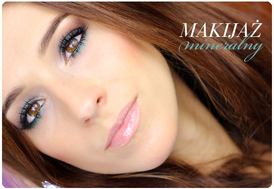

Makijaż mineralny
Kosmetyki mineralne
Kosmetyki mineralne owiane są legendą, a liczba ich zwolenniczek rośnie z dnia na dzień. Miliony kobiet na całym świecie zrezygnowały z tradycyjnych kosmetyków do makijażu na rzecz produktów mineralnych. Nie powinno to szczególnie dziwić jeśli weźmie się pod uwagę wszystkie ich zalety. Minerały nie zapychają porów, są delikatne dla skóry, wykazują właściwości łagodzące i przeciwzapalne, zawierają naturalny filtr SPF, są wodoodporne i niezwykle wydajne.
Mnogość produktów mineralnych na sklepowych półkach może jednak przyprawić o zawrót głowy. Warto jednak pamiętać, że nie wszystkie kosmetyki mineralne to 100% minerały. Niektóre produkty w swoich składach mają tylko domieszkę składników mineralnych.Dlatego przy zakupach warto zwrócić uwagę na listę składników wybranych kosmetyków do makijażu. Zasada jest prosta – im krótszy skład tym lepiej. Podstawą kosmetyków mineralnych powinna być mika (Mica), dwutlenek tytanu (Titanium Dioxide), tlenek cynku (Zinc Oxide) oraz glinka porcelanowa (Kaolin). Jednak o sile minerałów decyduje także to, czego w ich składach nie ma. Prawdziwe minerały nie zawierają parabenów, konserwantów, syntetycznych barwników, substancji zapachowych, talku, czy też substancji ropopochodnych – są to więc kosmetyki do makijażu, który można określić mianem ekologicznego – tj. całkowicie bezpiecznego dla cery oraz środowiska naturalnego.
Minerały polecane są osobom z cerą wrażliwą skłonną do alergii, ale stanowią także ciekawą alternatywę dla osób, które chcą używać łagodnych, naturalnych produktów nie testowanych na zwierzętach. Co więcej, kosmetyki do makijażu mineralnego znane są ze swojej niezwykłej trwałości i intensywnych barw. Nie musisz iść więc na żadne kompromisy. Dzięki minerałom możesz wykonać profesjonalny makijaż i mieć pewność, że jednocześnie dbasz o swoją skórę.
Makijaż mineralny dla kobiet aktywnych fizycznie
Aktywność fizyczna wcale nie musi oznaczać rezygnacji z makijażu, co więcej są sytuacje, gdy jest on wyjątkowo wskazany. Odpowiedni make up może pełnić funkcję ochronną przed zmiennymi warunkami atmosferycznymi takimi jak silne słońce czy wiatr. Makijaż na czas treningu powinien również nie obciążać nadmiernie cery i być jednocześnie wodoodporny. Tym bardziej wybórkosmetyków do makijażu nigdy nie powinien być kwestią przypadku. Kosmetyki mineralne są idealne, gdy uprawiając sport pragniesz, by Twoja cera była świeża, promienna i odpowiednio chroniona. Nie jest więc istotne, która dyscyplina jest Ci bliższa: bieganie, jazda na rowerze, czy też joga, produkty te doskonale sprawdzą się w każdej sytuacji niezależnie od tego czy chcesz czuć się bardziej komfortowo i pewnie, czy również chronić swoją skórę. Zachęcamy do zapoznania się z poniższymi wskazówkami jak stworzyć delikatny, sportowy make up.
Podstawą jest, stanowiący bazę pod dalszy makijaż, odpowiednio dobrany podkład. Lekkie, naturalne i wodoodporne podkłady mineralne o faktorze SPF 15 stanowią idealny wybór dla osób aktywnych fizycznie. Co więcej, ich sypka konsystencja oraz wyjątkowy skład sprawiają, że są one niezwykle trwałe, a ich aplikacja nadzwyczaj prosta.
Kolejnym kosmetykiem wartym uwagi amatorek sportu jest puder wykańczający, polecany szczególnie osobom o cerze tłustej. Ma on właściwości absorbujące sebum, dzięki czemu zawsze będziesz miała pewność, że Twoja cera jest odpowiednio zmatowiona.
Aplikacja podkładu mineralnego
Aplikacja podkładu mineralnego osobom niewtajemniczonym może na samym początku wydawać się czasochłonna i niezwykle trudna. Nic bardziej mylnego. Używanie minerałów jest tak naprawdę bajecznie proste – wystarczy odpowiednie narzędzie (tj. pędzel lub gąbka), by nałożyć podkład i tym samym sprawić, że cera nabierze blasku.
Najbardziej klasyczną metodą nakładania podkładów mineralnych jest aplikacja pędzlem typu Kabuki. Zacznij od wysypania odrobiny podkładu na pokrywkę słoiczka lub mały talerzyk i kolistymi ruchami „wmasuj” podkład w pędzel. Następnie osyp nadmiar produktu z pędzla uderzając nim o brzeg spodeczka. Na koniec uderz podstawą swojego Kabuki o twardą, płaską powierzchnię (w ten sposób zyskasz pewność, że kosmetyk dobrze osadził się we włosiu). Podkład nakładaj okrężnymi ruchami, delikatnie „wmasowując” go w twarz. W zależności od potrzeby nałóż w ten sposób 2-3 cienkie warstwy.
Innym sposobem jest nakładanie podkładu przy pomocy gąbki. Pierwszy krok pozostaje bez zmian – należy wysypać niewielką ilość podkładu na pokrywkę lub spodeczek, a następnie „wmasować” podkład w gąbkę. Podkład nakładaj posuwistymi ruchami zaczynając od czoła i kierując się ku brodzie. Warto pamiętać o tym, że ta metoda aplikacji daje większe krycie. Doskonale sprawdza się więc wtedy, gdy nasza cera ma słabszy moment.
Niezależnie od tego jaką metodę aplikacji wybrałaś, dobrym pomysłem jest wykończenie makijażu hydrolatem, woda termalną lub delikatnie zwilżoną chusteczką. Dzięki temu podkład lepiej stopi się ze skórą, szybciej zniknie także efekt pudrowości. Ciekawym pomysłem jest też użycie hydrolatu między poszczególnymi warstwami.